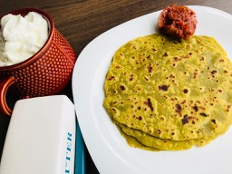

    <style type="text/css">
        #app {
            font-family: "Avenir", Helvetica, Arial, sans-serif;
            -webkit-font-smoothing: antialiased;
            -moz-osx-font-smoothing: grayscale;
            text-align: center;
            color: #2c3e50;
            margin: 10px;
        }
    </style>
    <style type="text/css">
        h3[data-v-cd503454] {
            margin: 40px 0 0;
        }
        
        a[data-v-cd503454] {
            color: #42b983;
        }
        
        ul{
            text-align: left; 
        }

        h1[data-v-cd503454] {
            color: ivory;
            font-family: "Righteous", cursive;
            font-size: 40px;
            line-height: 10px;
            font-weight: bold;
            margin-bottom: 20px;
            margin-top: 10px;
            margin-left: 20px;
            text-align: left;
            text-shadow: 0 1px 1px rgb(11, 12, 11);
        }
        
        .toolbar[data-v-cd503454] {
            margin-bottom: 20px;
            background: rgb(3, 3, 3);
            padding: 15px;
        }
    </style>
    <style type="text/css">
        #box {
            background-color: white;
            max-width: 300px;
            height: 224px;
            text-overflow: ellipsis;
            overflow: hidden;
        }
        
        .portfolio-image {
            height: 224px;
            width: 300px;
        }
        
        .border {
            border-color: grey;
            border-width: 5px;
            border-style: solid;
        }
        
        .gutter {
            margin-bottom: 30px;
        }
    </style>


                                    <figure class="cards double">                                        
                                        <figcaption class="caption">
                                        
                                            <!--  Copy your recipie in here -->
                                            <h1><span style="color: #99cc00;">Avocado Roti</span>&nbsp;</h1>
<p><strong>Ingredients</strong></p>
<ul>
<li>Whole wheat flour - 2 cups</li>
<li>Avocado 1 - mashed</li>
<li>Garlic 1 head - finely grated</li>
<li>Olive oil 1 tbsp</li>
<li>Salt as required</li>
<li>Butter as required&nbsp;</li>
</ul>
<p><strong>Method</strong></p>
<p>In a mixing bowl combine flour, mashed avocado, garlic, salt and olive oil. Avocado is very moist and so begin to knead the dough without any water. Add water only if required. Cover and let rest for an hour or so.</p>
<p>Make equal number of balls (roughly about 5 or 6) from the dough and flatten with a rolling pin, dusting with flour as you roll. Cook on hot griddle by flipping sides. About 30 seconds or so, on each side. Transfer to a platter and lightly brush butter on both sides and the roti is ready! Serve with any favorite side dish!</p>
                                            <!-- Copy Up to here-->

                                        </figcaption>
                                        